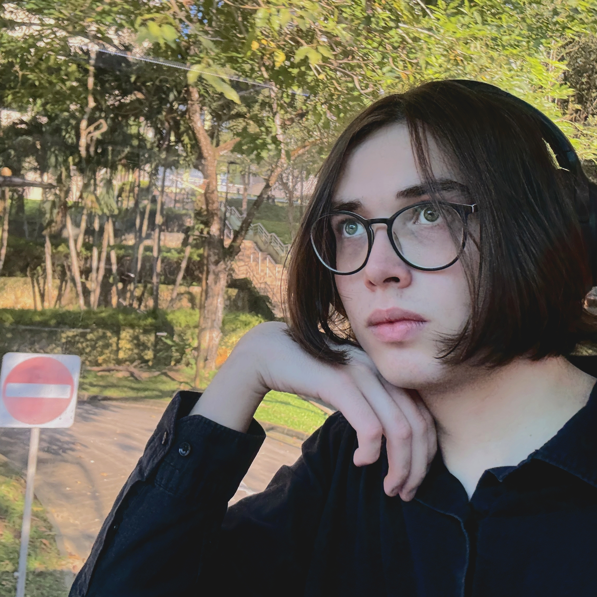

Some people might know me as kuravax.
I am an aspiring computational scientist. At this point, I am a student in Nanyang Technological University, Singapore (NTU) pursuing a degree in Chemistry. I have been participating in research since I was fifteen. Currently I'm working as an undergraduate researcher in two groups: with Dr Lu Yunpeng, working on development of high-performance computer algorithms for chemical reaction dynamics simulations using the time-dependent quantum reactive scattering theory, also working with machine learning and neural networks for accelerating potential energy surface creation, as well as classical computational chemistry. I also work at the School of Electrical and Electronics Engineering with Prof Hung Dinh Nguyen and Dr Petr Vorobev, designing rigorous electrochemical models for battery cells, studying parameter identifiability and estimation theory based on various parameterised PDE models and implementing efficient numerical solution schemes that could potentially serve as a backbone of future BMS designs.
My research interests lie in connecting the rigour and deterministic nature of natural sciences and the practical applications in interdisciplinary fields such as battery design, reactive scattering on solid surfaces and high-performance numerical methods for scientific computing. You can also find a list of my publications, projects, and my CV at this website.
I am a holder of various awards and titles, such as NTU President Research Scholar (2024, 2025), Latvian Prime Minister Prize for outstanding results in the International Chemistry Olympiad (2022, 2023) and a recipient of various scholarships, such as the Latvian Ministry of Finance Centenary Excellence Scholarship (2023). I am honoured to have been granted the citizenship of the Republic of Latvia for Special Meritorious Service for the Benefit of Latvia by the Saeima, the Latvian parliament, for my past achievements in science Olympiads, my research, as well as my work mentoring the national teams.
I also have been teaching Chemistry, Mathematics and Physics to others since my youth, and also occasionally write problems for various Chemistry contests. You can find some of my materials and reading lists here.